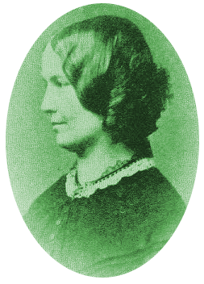

A Charlotte Brontë Haven
Inspired by The Republic of Pemeberley, a home for Jane Austen fans, this site is for lovers of Charlotte Brontë and her writing.
If you've ever found yourself reading through the pages of a C. Brontë's work, wishing you could talk to someone who is also familiar with Lucy Snowe, this place is for you. If you enjoy Jane Eyre and want a place to talk about it, you are welcome here. If you haven't heard much about Charlotte Brontë and want to read her works, this place is also for you.
This site is provided as an example for Elizabeth Mitchell's portfolio. But this may be an actual site in the future.
Lovely text about Charlotte Brontë.